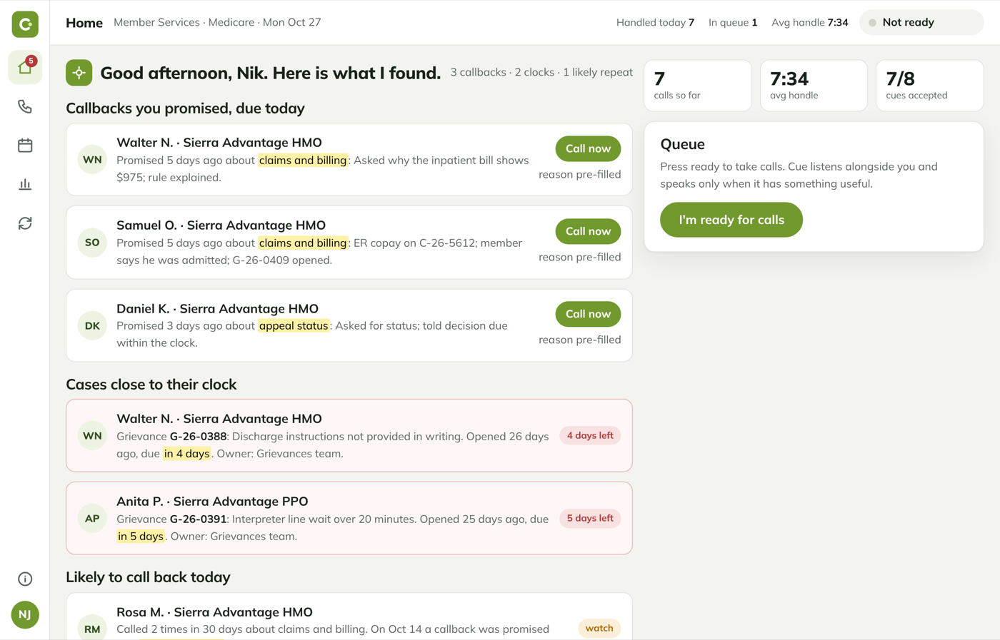

Working prototype · no model called
CureCue
An assistant beside a Medicare Advantage member-service advocate. It never speaks to the member; the advocate is accountable for every word.
195labelled turns, 3 language paths
8 of 8release gates passed
0.98escalations caught
- VOne advocate's whole shift studied before any AI was picked.
- LThe first golden set was English only. Adding Spanish showed release 2 missed every Spanish-language escalation; release 3 fixed it.
- UNever crosses into coverage decisions, prior authorization or clinical advice.
- DShadow mode, canary and a kill switch per skill designed